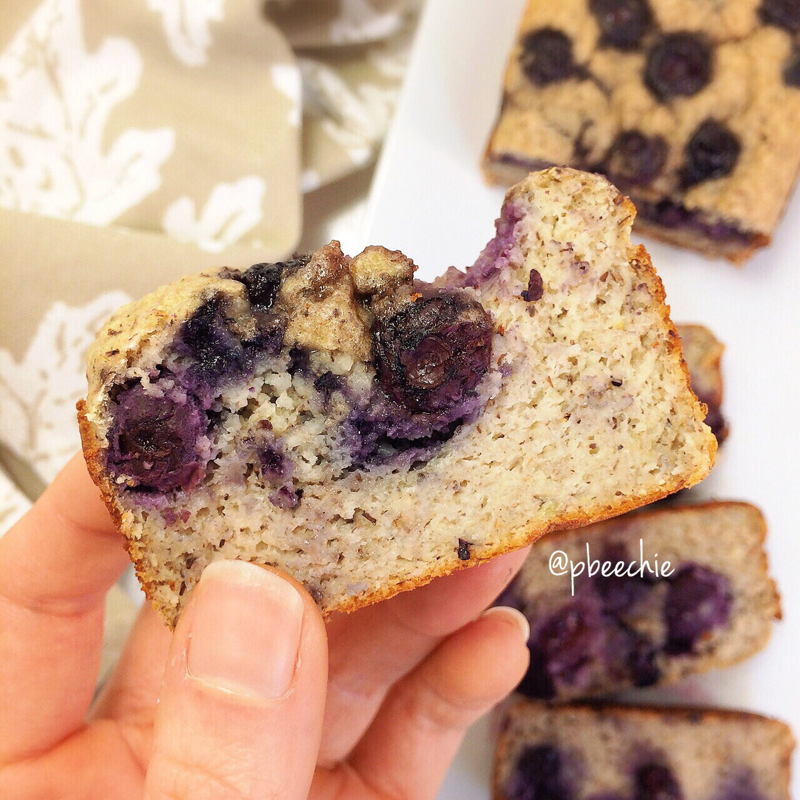

Blueberry Banana Bread

Playin in the kitchen last night; I whipped up a single-serve blueberry banana bread for dessert. Awllll fore meeeee. Tried two versions and this was the clearrrrr winner so I wanted to share the recipe! The other version was just tragic ._. because I'm trying to play with the new vitafiber I have...and I don't quite have a grasp on how it bakes yet. But I'll get it eventually! For now, this recipe sans vitafiber is best :D Okay now I leave you with this...But first, a joke! What's black and white with purple hair? Eh? #eh? Me in 2 days. I'm gonna be a dang ube mermaid princess #purpleombre #iamwhatieat.
Blueberry Banana Bread
Serves: 1-2
-
ripe 1/2 banana (70 g)
-
1/2 scoop vanilla whey protein
-
1/2 cup raw old fashioned rolled oats
-
1/4 cup unsweetened almond milk
-
1 TBSP buckwheat flour (or coconut flour)
-
1 egg white
-
1/2 tsp baking powder
-
2 stevia packets
-
1/2 bup blueberries (fresh or frozen)
In a small blender or magic bullet, blend everything up (except for the blueberries)!! Spray a mini bread loaf pan with nonstick spray and pour your batter in. Then pour the blueberries on top. Bake at 350 F for 40-45 minutes! You should be able to poke it with a toothpick and have the toothpick come out clean.
For entire recipe: 357 cals; 5 g fat, 59 g carbs (9 g fiber), and 23 g protein